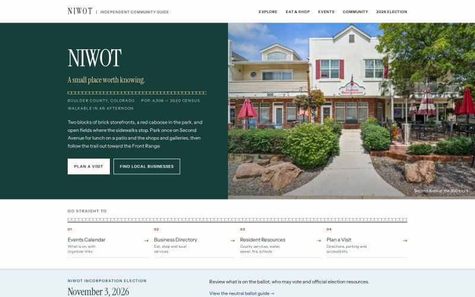
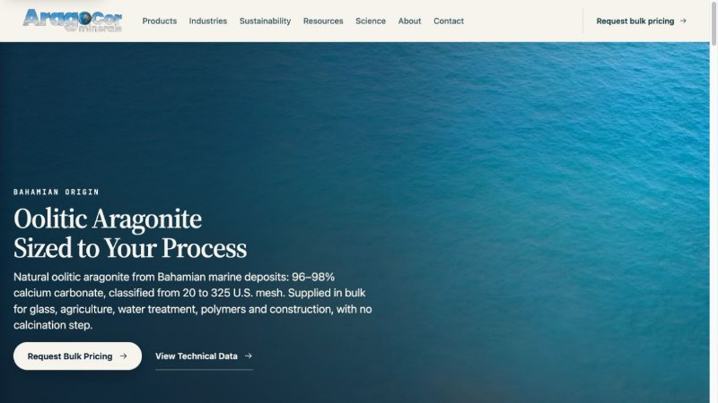
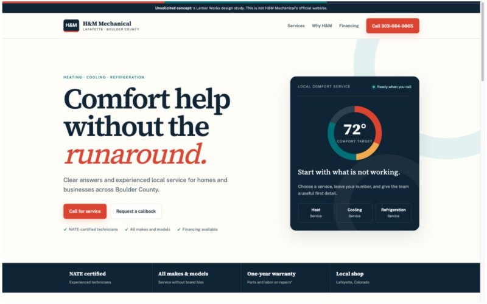
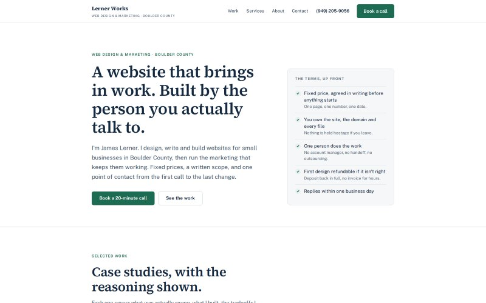

Work
What was wrong, what I built, and what it cost to decide.
Each case study is written the way I'd explain the project on a call: the actual problem, the constraints, the build, the tradeoffs I made, and the parts that can be measured. Independent concepts are labelled as concepts. Nothing here is presented as client work unless it was.
Own project · Network of community guides · 2026
Inside the Towns
Seven independent guides to Colorado Front Range towns and the hub above them, built from one Astro codebase. Each site carries its own colour, photography and local research; none of them is special-cased in any component.
1 codebase, 8 sitesRead the case study →

Own project · Community guide · 2026 · Now redirects
TownofNiwot.com
A nine-page independent guide for a place with no town hall: a directory where every row is sourced and dated, a calendar with no scraper, and neutral voter information for the November 2026 incorporation election, held to a stricter standard than the rest. The single-town guide that Inside the Towns grew out of; it now redirects to Inside Niwot.
63 dated listings, 78 testsRead the case study →

Client project · Industrial supplier · 2026
AragoCor Minerals
A marketing site for a Bahamian aragonite supplier selling one product into five technical markets, plus the AI catalog, freight calculator and quote-request tool behind it.
5 markets, 1 siteRead the case study →

Independent concept · HVAC · 2026
H&M Mechanical
A two-page rebuild for a Lafayette heating and cooling company whose mobile site showed three phone numbers and let a visitor tap none of them. Documented baseline, measured changes.
0 → 1 tap to callRead the case study →

This site · 2026
lernerworks.com
The site you're reading, built the way I'd build yours: hand-written pages, self-hosted fonts, no JavaScript, no third-party requests. Every claim on the page is measured.
0 third-party requestsRead the case study →
How these are written
The same six questions, every time.
A case study is only useful if you can tell what was actually done and what it changed. So each one follows the same structure, and I don't skip the sections that are uncomfortable.
- The situation. What the business does, who it sells to, and what was specifically getting in the way. Not "the site was dated."
- Constraints. Budget, time, what couldn't be claimed, what had to keep working.
- What I built. The structure, the copy, the conversion path, with screenshots of the real thing.
- Decisions and tradeoffs. What I chose not to do, and what each choice cost.
- Result. Only what can be counted or measured. Where a number isn't available yet, I say so rather than estimate it.
- Where it stands. What's live, what's pending, and what the next step is.
You'll notice there are no testimonials on this site. I'd rather show you the work and the reasoning than a quote I chose myself. If you want to speak to someone I've worked with, ask me on the call and I'll make the introduction.